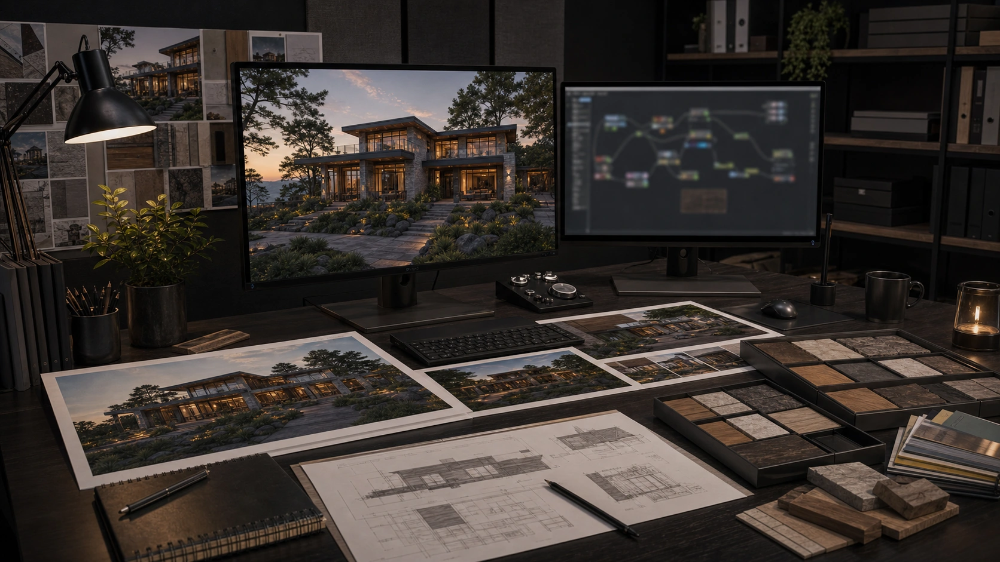
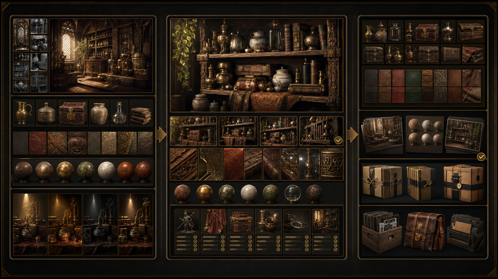
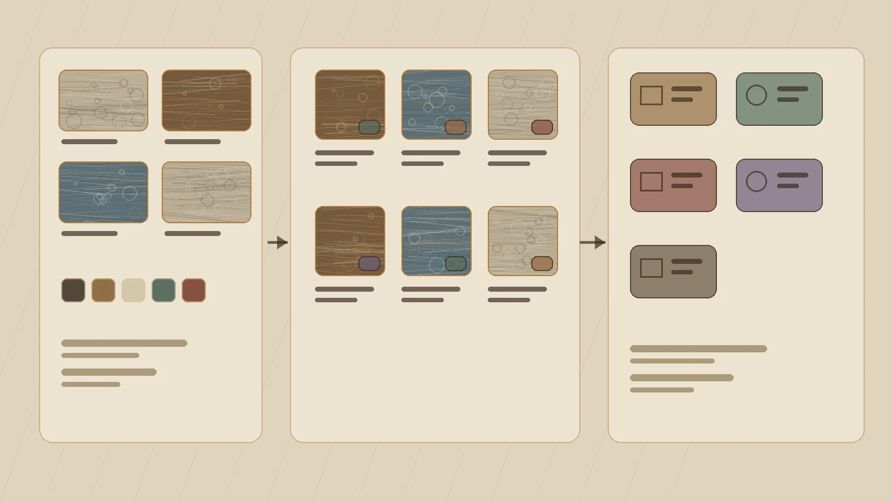
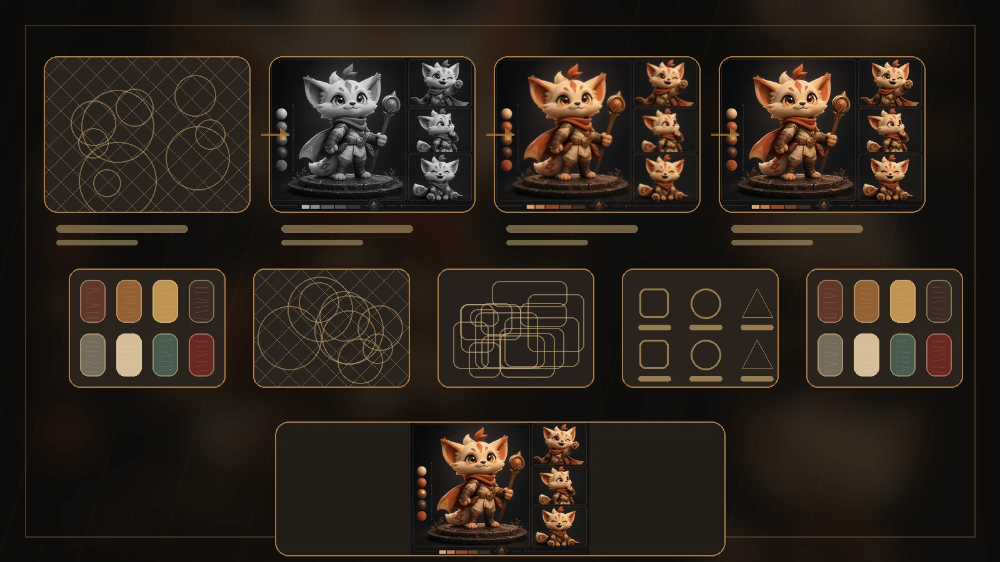

Character scope
Define the character role, use case, style direction, variants, and delivery format from sketches, references, or founder notes.
3D Character Artist | Visual Pipeline Builder
I create expressive 3D characters, avatars, mascots, outfits, and game-facing assets. I also help teams turn technical inputs, AI references, and rough visual ideas into cleaner 3D production workflows, approval visuals, and client-ready presentation systems.

Where I help
Founders, studios, creators, and custom-product teams often arrive with references, technical drawings, AI images, 2D concepts, or a rough character direction. I turn that into clear scope, style decisions, production steps, review points, and final asset expectations before time is spent in the wrong place.
Define the character role, use case, style direction, variants, and delivery format from sketches, references, or founder notes.
Turn technical drawings, rough ideas, or visual uncertainty into review pages, approval visuals, material studies, and simple decision steps.
Resolve costume, metal, glass, fabric, prop, and surface-detail decisions so the asset reads clearly in presentation and real-time use.
Plan the path from concept to 3D: sculpt/model, retopo, UVs, textures, rig or engine needs, review gates, and constraints.
Services
Choose the package that matches the brief. Lesly can start from a sketch, moodboard, AI reference, written description, existing concept, or technical drawing and shape it into a clear 3D production or client-approval path.
Turn a sketch, reference image, moodboard, written brief, or rough idea into a polished 3D character with strong silhouette, readable materials, and usable deliverables.
Visual Pipeline & Approval Systems for premium approval visuals, material studies, review checkpoints, presentation pages, progress updates, and visual standards for high-value custom products and production teams.
Custom characters prepared for real-time pipelines with clean topology, UVs, textures, materials, turnaround views, and export-ready files where scoped.
Custom avatar characters with a clear face read, expression direction, outfit style, pose needs, and creator-facing presentation assets.
3D mascots and product characters for startups, apps, software products, education brands, campaigns, and creator businesses.
Stylized outfits, skins, props, clothing, and character add-ons for games, avatars, Roblox-style worlds, and creator identities.
High-poly sculpting, low-poly retopology, UV mapping, PBR or stylized texturing, materials, and final renders.
Reference systems, AI-assisted exploration, prompt and review standards, tool handoff notes, and repeatable workflows that help creative teams use new technology without losing art direction.
Case Studies
Each board represents a real public portfolio path: concept to 3D, game-ready character, avatar, mascot, outfit, staging, technical process, or visual workflow. Open a project to see the story, production path, craft checks, and deliverables.

Turns an early sketch, reference image, or moodboard into a polished character direction.

A full-body game-character presentation focused on silhouette, costume hierarchy, material read, and delivery planning.

A focused presentation for grounding the character with a plinth, scale cues, restrained props, lighting, and camera context.

An ornate prop-art package with reusable object groups, material studies, source mesh evidence, and handoff notes.

A technical presentation format for showing sculpt forms, retopology direction, turnaround views, and inspection material.

A controlled local visualization workflow for turning references, material direction, AI images, and review needs into usable production decisions.

A reusable visual standards system for references, material review, AI-assisted exploration, and production handoff.

A progress-review system that connects site photos, homeowner comments, AI visual options, response states, and next actions.
An avatar character presentation with face read, expression range, costume detail, and creator-facing thumbnails.

A brand mascot presentation for product, startup, creator, education, and campaign character use.

A collectible mascot direction case for shape language, print-readiness planning, base logic, and handoff requirements.

A costume and accessory presentation built around outfit silhouette, material closeups, prop details, and variation options.
Process
A clear path from brief to delivery. Five stages, each with a defined output, review point, and practical handoff for the next creative or technical step.
Define the character, product, visual style, use case, references, drawings, deliverables, timeline, and technical needs.
Refine silhouette, materials, proportions, mood, review needs, production constraints, and what the team should decide first.
Create the character, render board, review visual, material study, presentation page, or workflow system that fits the brief.
Check readability, material consistency, geometry needs, AI-assisted outputs, prompt rules, review standards, and integration notes.
Final renders, turnarounds, BLEND, FBX, OBJ, texture maps, presentation pages, workflow notes, and handoff material as agreed.
About
Lesly builds stylized 3D characters and supports teams that need stronger visual direction, client approval systems, and cleaner AI-assisted 3D production workflows.

Her painting background gives the work a strong sense of color, form, anatomy, silhouette, costume language, and material separation.
The 3D pipeline covers character design, sculpting, modeling, retopology, UVs, texturing, materials, final renders, source files, exports, and handoff notes.
Start a project
Share the character idea, references, use case, timeline, and required deliverables. Include sketches, moodboards, AI references, written briefs, or existing character concepts if available.